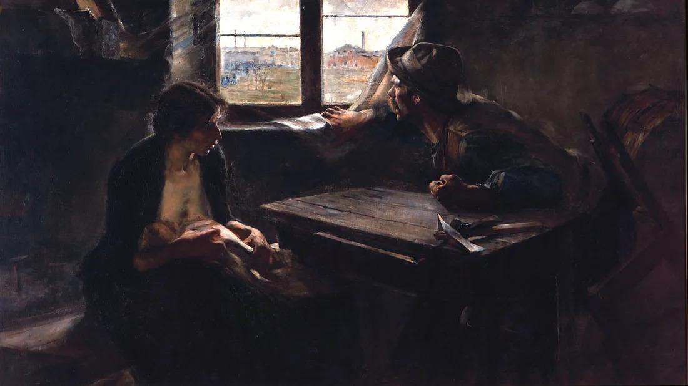

Simple Composición 2: con pan y con trabajo

a pan y a trabajo
ante pan y ante trabajo
bajo pan y bajo trabajo
cabe pan y cabe trabajo
con pan y con trabajo
contra pan y contra trabajo
de pan y de trabajo
desde pan y desde trabajo
durante pan y durante trabajo
en pan y en trabajo
entre pan y entre trabajo
hacia pan y hacia trabajo
hasta pan y hasta trabajo
mediante pan y mediante trabajo
para pan y para trabajo
por pan y por trabajo
según pan y según trabajo
so pan y so trabajo
sobre pan y sobre trabajo
tras pan y tras trabajo
versus pan y versus trabajo
vía pan y vía trabajo
.